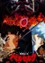
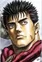

Berserk
Score: 9.47 Ranked: #1 Popularity: #1 Members: 724,071
Synopsis
Guts, a former mercenary now known as the Black Swordsman, is out for revenge. After a tumultuous childhood, he finally finds someone he respects and believes he can trust, only to have everything fall apart when this person takes away everything important to Guts for the purpose of fulfilling his own desires. Now marked for death, Guts becomes condemned to a fate in which he is relentlessly pursued by demonic beings. Setting out on a dreadful quest riddled with misfortune, Guts, armed with a massive sword and monstrous strength, will let nothing stop him, not even death itself, until he is finally able to take the head of the one who stripped him—and his loved one—of their humanity. Included one-shot: Volume 14: Berserk: The Prototype
Background
Berserk won the Excellence Award at the sixth Tezuka Osamu Cultural Prize in 2002. As of September 2023, over 60 million copies of the manga are in circulation. The series has been published in English by Dark Horse Comics since November 4, 2003. It has also been released in Argentina, Brazil, Czech Republic, France, Germany, Greece, Hong Kong, Italy, México, Poland, South Korea, Spain, Taiwan, Thailand, and Turkey. In May 2021, the author Kentaro Miura suddenly died at the age of 54. Chapter 364 of Berserk was published posthumously on September 10, 2021. Miura would often share details about the series' story with his childhood friend and fellow mangaka Kouji Mori. The series resumed on June 24, 2022, with Studio Gaga handling the art and Kouji Mori's supervision.
Information
- Type: Manga
- Volumes: 42
- Status: Publishing
- Published: Aug 25, 1989 to ?
- Authors: Miura, Kentarou (Story & Art), Studio Gaga (Art)
- Genres: Action, Adventure, Award Winning, Drama, Fantasy, Horror, Supernatural
- Theme: Gore, Military, Mythology, Psychological
Related Entries
Adaptation (TV)
Kenpuu Denki Berserk

Adaptation (Movie)
Berserk: Ougon Jidai-hen II - Doldrey Kouryaku
Characters & Voice Actors
|  Guts Main |
 Grifftith
Main
Grifftith
Main
|
 Casca
Main
Casca
Main
|
 Puck
support
Puck
support
|